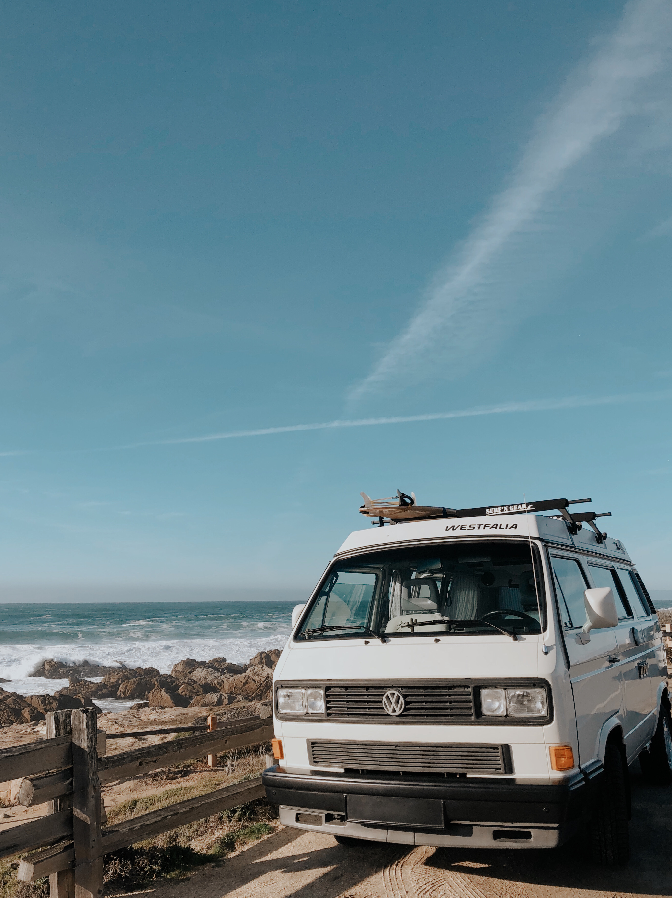
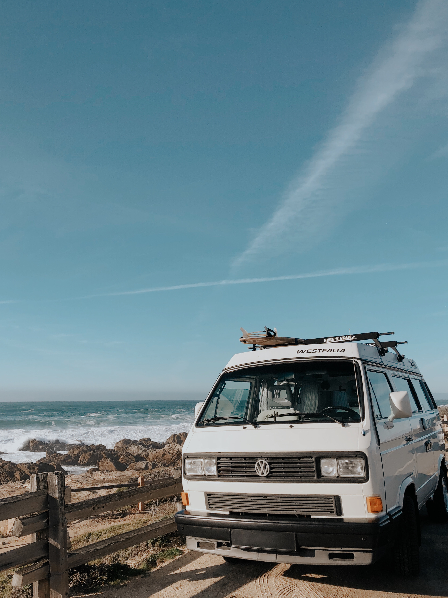

One journey, many turns
Every good story has twists and turns. Similar to many others, my path was not clear cut from the beginning. I am an analytical and creative person. For a long time, especially in college, these two skills had felt in a sense contradictory. Many people would understandably give me confused looks after I told them that I was a double major in dance and criminology. How did something analytical fit with something much more creative? And at the time, I didn’t really know. In fact, post-college was daunting because I felt like I had to choose one path over the other. That was until I learned about UI/UX.
When I first learned about UI/UX I was amazed at how I had already been surrounded by it daily. As I learned more about how design can impact people I naturally became more curious and found myself analyzing the interactions I had with technology.
Soon after, I desired to become a designer who would bridge the gap between people and technology.
It took me some time, a lot of great mentors, and experience for me to grow into the designer I am today (and excited that there's much more growth to come). If I could boil down what my central goal is, it would be this: to always design for people... to dig deeper into understanding them, to bring them a pleasant experience, and to help them achieve their goals.

 


Beyond design, I have a love for photography, dance, and Christ. In my free time, I also enjoy exploring new places (including new places to eat)!